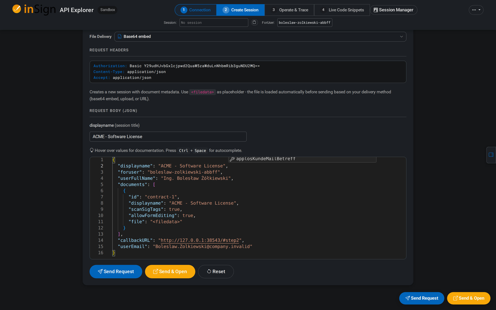

inSign API - Getting Started
Integrate electronic signatures into your application in minutes.
This guide is for developers and anyone interested in exploring the inSign API.
Try it out right here - completely free, no registration needed.
Not looking for technical details? Visit www.getinsign.com for product information.
Create Session
POST /configure/sessionUpload a document and create a signing session. The response contains a sessionid.
You can provide your PDF in several ways: as a public fileURL (used below), as a Base64-encoded string via fileB64, or as a multipart/form-data upload. For details see the API Explorer.
Additional Resources
Full API Explorer
Want to go deeper? The inSign API Explorer gives you a complete interactive playground.
- JSON autocomplete and validation - schema-aware editor with inline suggestions, hover docs, and real-time error highlighting powered by the live OpenAPI spec
- Code generation - instantly generate ready-to-run code snippets in 13 variants across 11 languages (cURL, Java, Python, PHP, C#, Node.js, TypeScript, Ruby, Go, Rust, Kotlin) including 3 Java flavors
- API call tracing - full request/response trace log with timing, headers, and status codes for every call you make
- Webhook visualization - built-in webhook viewer that catches and displays real-time callback events as they arrive from the server
- 12 branded test contracts - professionally designed PDFs with unique company branding, logos, and color schemes - or drag-and-drop your own PDF
- Feature selector - toggle inSign features like biometric signatures, timestamps, and document options directly from the UI
- CSS customizer - live theme editor to preview how the inSign signing UI looks with your brand colors
- Dark mode - full light/dark theme support across the entire explorer

Open API Explorer Explorer Documentation
Postman Collection
Import the pre-built collection for quick API testing:
- Getting started with inSign API Sandbox (collection)
- inSign Sandbox Environment (environment)
Java API Library
For Java projects, the insign-java-api library provides a typed client with builders and configuration helpers.
<dependency>
<groupId>com.getinsign</groupId>
<artifactId>insign-java-api</artifactId>
</dependency>Add the GitHub Package Registry to your Maven settings.xml -
see Working with the Apache Maven registry.
Test Documents
12 branded test contracts are included in the API Explorer, each with unique company branding, logos, and color schemes. You can also drag and drop your own PDF directly into the Explorer.
Project Structure
docs/ Developer hub (GitHub Pages)
index.html Landing page & overview
guide.html Getting Started guide (this page)
explorer.html API Explorer - interactive playground
js/ Application modules + code generator
codegen-templates/ Code snippet templates (13 variants, 11 languages)
data/ Test PDFs, demo data, webhook/relay configs
src/sign-widget-demo-application/ Embedded signature pad demo (Node.js)
src/java/ Spring Boot sample application